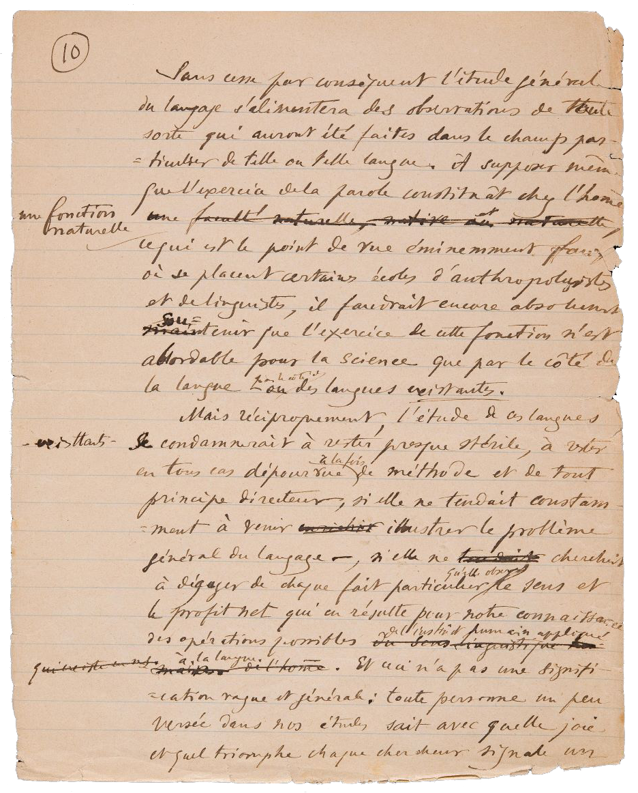
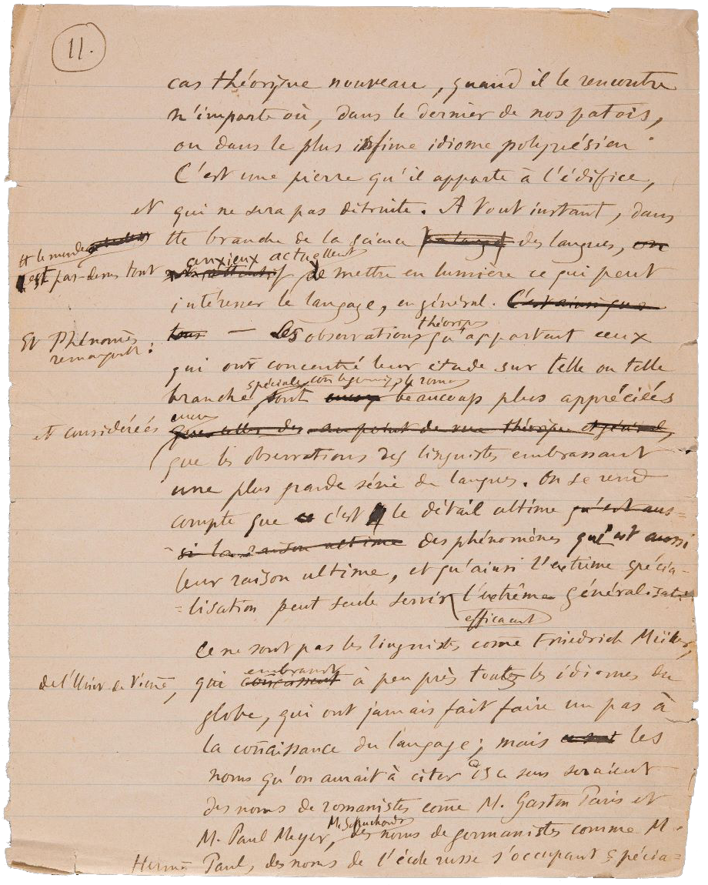

|
À supposer mème
Et ceci n’a pas une signifi-
À tout instant, dans
On se rend
|
  |
| termine tecnico <term> |
| antroponimo <name> |
| istituzione <orgName> |
| testo non chiaro <unclear> |
| testo danneggiato <damage> |
| abbreviazione <abbr> |
| espansione <expan> |
| testo aggiunto <add> |
| testo cancellato <del> |
| sovrascrittura <del> |
| titulus <am> |
| punteggiatura <pc> |
| errore <sic> |
| regolare <reg> |
| fr: Étude des langues | it: Studio delle lingue |
| Lo studio delle lingue, o glottologia, si occupa dello studio storico delle lingue e delle loro famiglie e gruppi di appartenenza, delle origini etimologiche delle parole, considerando i loro rapporti e sviluppi in diacronia. | |
| fr: Linguiste | it: Linguista |
| Linguista: chi si dedica allo studio delle lingue (o anche soltanto, o in modo specifico, della propria lingua), soprattutto da un punto di vista teorico, sistematico e storico; studioso di linguistica. | |
| fr: Méthode | it: Metodo |
| In genere, il modo, la via, il procedimento seguito nel perseguire uno scopo, nello svolgere una qualsiasi attività, secondo un ordine e un piano prestabiliti in vista del fine che s’intende raggiungere. | |
| fr: Problème | it: Problema |
| Problema: ogni quesito di cui si richieda ad altri o a sé stessi la soluzione, partendo di solito da elementi noti. | |
| fr: Instinct humain | it: Istinto umano |
| Istinto: comportamento innato proprio di una specie animale, che si svolge secondo una determinata sequenza temporale ed è sempre rivolto a una precisa finalità. L’istinto provoca negli animali e nell’uomo risposte o reazioni caratteristiche, sostanzialmente fisse e immediate, a determinate situazioni. | |
| fr: Patois | it: Dialetto |
| Dialetto: sistema linguistico di ambito geografico o culturale per lo più limitato, che non ha raggiunto o che ha perduto autonomia e prestigio di fronte agli altri sistemi con i quali costituisce geneticamente un gruppo. | |
| fr: Idiome | it: Idioma |
| Idioma: lingua propria di una nazione. In particolare, in linguistica, il conglomerato di sistemi che coesistono nell’ambito di una data comunità storico-sociologica. | |
| fr: General | it: Generale |
| Generale: che concerne il genere, e non la specie o l’individuo (contrapp. perciò a speciale, particolare). Quindi, nell’uso comune, si riferisce a tutto un insieme di persone o abbraccia tutto un ordine di fatti. | |
| fr: Généralisation | it: Generalizzazione |
| Generalizzazione: l’atto, il fatto di generalizzare, di essere generalizzato: generalizzazione di un uso, di un metodo, di un giudizio. In psicologia clinica, fenomeno per cui stimoli simili a quello condizionato possono provocare lo stesso tipo di risposta. | |
| fr: Langage | it: Linguaggio |
| Il linguaggio è una forma di condotta comunicativa atta a trasmettere informazioni e a stabilire un rapporto di interazione che utilizza simboli aventi identico valore per gli individui appartenenti a uno stesso ambiente socioculturale. Dalle peculiarità della lingua rispetto a ogni altro codice semiologico derivano le peculiarità del linguaggio verbale rispetto a ogni altro tipo di semiosi. | |
| fr: Science des langues | it: Scuola della lingua |
| La linguistica è lo studio scientifico del linguaggio verbale umano e delle sue strutture. Essa include lo studio della fonetica, della grammatica, del lessico, della morfologia, della sintassi e della testualità. È una disciplina scientifica, in quanto si basa su approcci empirici e oggettivi. | |
| fr: Langue | it: Lingua |
| Il complesso delle parole e locuzioni usate da tutto un popolo come mezzo comune per l’espressione e lo scambio di pensieri e sentimenti, con caratteri tali da costituire un organismo storicamente determinato, sottoposto a proprie leggi fonetiche, morfologiche e sintattiche che sono anch’esse parte integrante della lingua. | |
| fr: Point de vue | it: Punto di vista |
| Per punto di vista si intende il modo soggettivo di vedere i fatti, le situazioni e i problemi, e quindi di intendere, di valutare. | |
| fr: Principe | it: Principio |
| Un principio è un concetto che indica le basi e i presupposti iniziali su cui si basa o poggia una teoria e che assumono, per convenzione o riconosciuto diritto, validità generale ed universale all'interno della teoria stessa. | |
| Università di Vienna |
| L'Università di Vienna (tedesco: Universität Wien) è un'università pubblica di Vienna. Aperta nel 1365, è una delle più antiche d'Europa. Sebbene non possa essere classificata a pieno titolo come università generalista, come da tradizione austriaca, offre più di 130 corsi di studio, ed è solitamente indicata dagli austriaci come Hauptuni. |
| Ecole d'anthropologie |
| Paul Meyer |
| Formatosi alla École nationale des chartes di Parigi come archivista e medievista, iniziò la sua carriera nel 1863 entrando a far parte del dipartimento manoscritti della Bibliothèque nationale de France. |
| Paul Theodor Otto Hermann |
| È stato un linguista e filologo tedesco, esponente della Scuola neogrammaticale che influenzò profondamente l'indoeuropeistica tra XIX e XX secolo. |
| Gaston Paris |
| Allievo di Friedrich Diez, si può dire che sia stato lui ad avviare la moderna ricerca storico-filologica, così come il suo maestro aveva avviato quella linguistica. Venne candidato al Premio Nobel per la letteratura nel 1901, 1902 e 1903. |
| Hugo Ernst Mario Schuchardt |
| È stato un linguista tedesco. Maestro indiscusso degli studi di romanistica, si occupò anche di basco e di lingue miste come i pidgin, i creoli e la lingua franca del Mediterraneo. |
| Friedrich Müller |
| Studiò presso l'Università di Gottinga, poi si trasferì presso l'Università di Vienna (1853-1857), dove fu anche bibliotecario dal 1858 al 1866; dopo questo ruolo fu premiato diventando professore di filologia comparata e sanscrito. Fu membro dell'Accademia austriaca delle scienze avendo fama di grandissimo studioso tra i suoi contemporanei, in particolare della filologia comparata. |